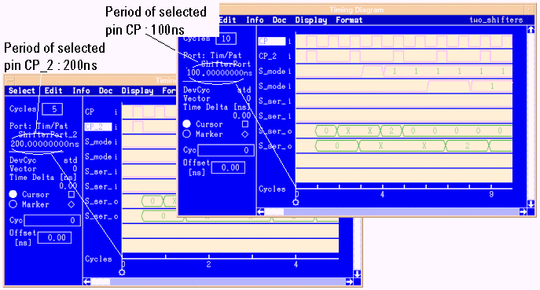
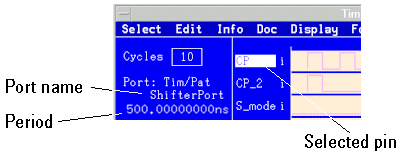

Using the Timing Diagram Tool for multiport tests
The Timing Diagram provides the same functionality as in a single-port scenario.It is used in the same way as in non multiport tests.
Port <port> did not execute any cycles. Displaying it's pins is not supported and may lead to unexpected behavior. Please adapt your format definition.
Time scale shows the cycles of the selected pin
The Timing Diagram is a debugging tool which displays the results of different ports in one view (global debugging tool). The time scale is divided into cycles of the selected pin.

- Select a pin.
The port and the period of that pin are displayed in the upper left part of the Timing Diagram (see figure below). The time axis shows the cycle length of the selected pin.
Note The firmware precision of the period field has an accuracy of 9 decimal places. However, because of limited space the Timing Diagram window displays only 6 to 8 decimal places (for example, 500.00000000 ns as in the graphic below).

Alignment of Debugging Tools and Pattern Tool
The Timing Diagram allows you to study the timing of all ports at a certain time point. You can align the Error Map and the Pattern Tool with this time stamp (same alignment feature as in a single-port scenario).
The benefit of the alignment feature in a multiport scenario is that it allows you to see the cycles (or vectors) of different ports (which in general run with different speeds) associated with the same time stamp.
Here is the procedure to align the Pattern Tool with the Timing Diagram:
- Select a cycle of the port belonging to the highlighted pin in the Timing Diagram. For example, cycle 26 of port "ShifterPort" (period = 100ns).
- Open the Pattern Tool and select a port. The Pattern Tool shows the vectors and highlights the failing data of the selected port. For example, select port "ShifterPort_2" (period = 200ns).
- To align the Timing Diagram (with focus for example on "ShifterPort") with the Error Map (with focus for example on "ShifterPort_2") select Align Displays from the Display menu in the Timing Diagram. In the example of this procedure cycle 26 of "ShifterPort" and cycle 13 of "ShifterPort_2" have the same time stamp. So the cycle focus in the Pattern Tool (port focus on "ShifterPort_2") is set to cycle 13.
- You can also select a cycle in the Pattern Tool and align the Timing Diagram: Select Align Displays from the Actions menu in the Pattern Tool.
Functional changes
- Introduced before SmarTest 6.3.2